Interface¶
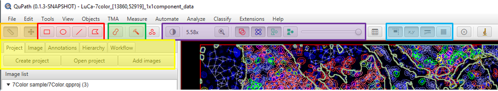{kind=link}
Overview:¶
The menus are at the top, a button bar with a variety of quick access options is below that, the Analysis panel is on the left (in yellow), and the Viewer takes up most of the screen space in the lower right.
Menus at the top: Some notes of interest. If you are having memory issues (Java out of memory errors), you will likely want to look in Help->Show setup options to adjust your maximum allowed memory. If you are running into strange errors on a variety of projects, one of the first things to try is Edit->Reset preferences. The View menu has several options that are not immediately available on the button bar, such as showing TMA grid labels, filling in annotations (useful for distinguishing tumor/stroma regions), or adjusting what parts of cells are shown.
Button bar:¶
Orange: The ruler turns on and off the left hand set of tabs, called the analysis panel. This can be useful if you need more screen space for manual annotations. The crossed arrows is the Move tool (M key), and will be your default method of navigating the image. Left click within the Viewer and drag in most places to move the view.
An exception to this is if you have an unlocked annotation. In that case, you will select the annotation and drag it. On that note, BE CAREFUL WHEN EDITING UNLOCKED SIMPLE TISSUE DETECTIONS; accidentally dragging these around in 0.1.2 was, occasionally, heartbreaking. In 0.1.3+ the Edit->Undo function (CTRL+Z) can be very useful here. In 0.1.2, hopefully your data is saved (and saved often), and you can use CTRL+R to revert (also in File menu).
Red: These are some annotation drawing tools that I almost never use. The line tool can be useful for measuring distances. Their use is pretty straightforward. All initially created annotations start unlocked.
Green: These are the bread and butter of manual annotation. The Brush tool (B key) and Wand tool (W key) are both strongly linked to the current zoom (unless you turn this off in Preferences), so use that to your advantage. Both tools have one or more options in the Preferences menu that can be used to modify their effects. Holding the ALT key while drawing with either will act as an eraser. In 0.1.3+ CTRL+SHIFT+tool will draw up to, but not cross over into, existing annotations. The wand tool’s behavior is dependent on what is visible on screen. That includes color transformations in brightfield (looking at the Eosin “channel”), or turning on and off channels in multichannel images. Zooming out and only displaying a single channel or color transform can be a very easy way to quickly annotate large tumor areas.
I usually have M, B, and W, bound to various buttons on a multifunction gaming mouse.
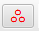 Points tool: Create annotation object points manually. If you want to pick out objects that image analysis methods are not currently working for, or want to have a biologist/pathologist mark the correct “targets” for an image analyst to try and create an algorithm to find, this may be the tool for you.
Purple: A selection of tools to modify what is shown within the Viewer. The first is the Brightness and contrast dialog, which can be used to adjust the visibility of various channels or, surprise, surprise, the brightness and contrast of brightfield images. Many of these options can be controlled through the number keys, which is especially handy in low channel number (<10) multiplex images. The main trick to this dialog that might not be immediately obvious is that you can double click on the Min display or Max display to see and edit the exact value.
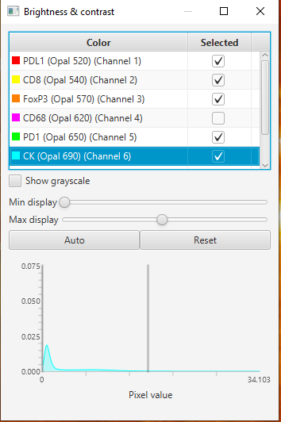Magnification: The number immediately to the right of the Brightness and contrast button is the current magnification of the Viewer. Normally zoom would be controlled with the mouse wheel, but you can also double click this to manually edit the zoom. Useful when taking equivalent screenshots across multiple areas or images.
Fit to Viewer: The magnifying glass with a square zooms out (or in) until the entire image fits within the viewer.
Object buttons: These determine the visibility of various types of objects. The first turns annotations on or off, the second controls the TMA grid, the third detection outlines (tiles or cells), and the fourth fills in the tiles or cells. The fill has no effect if the detection outlines are not visible. The fill can be very useful when looking at classified detections, or when using Measure->Show measurement maps.
Note: Selected objects will always be visible regardless of these settings. 0.2.0m# has an option where this behavior can be toggled.
Slider: Opacity of all objects, including selected objects. Fear that nothing is working is often the result of having turned this all the way down and then forgotten about it.
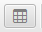 Measurements: Quick access to dialogs that have various measurements listed for different object types.
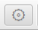 Preferences: Where you can change many of the ways QuPath behaves, or how varous file types are treated, etc.
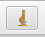 ImageJ: Quick access for sending regions to ImageJ.
New in 0.2.0m#
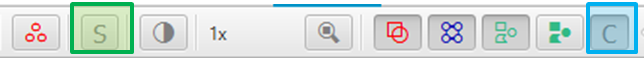Green: Select tool. The brush, wand and other area tools can now be used to create temporary structures that select every sub-object completely contained within them.
Blue: Pixel classifier visibility.
Analysis Panel:¶
Project tab: As shown above, this is your list of images within your project, and is the primary way to create a new project, add images, or remove images in 0.1.2.
0.2.0m# has added significantly more functionality to this tab, including the ability to add metadata tags for a hierarchy like structure, selecting groups of images for removal, etc. Below shows adding a metadata tag for “Group” A and B, and then sorting by “Group” metadata.
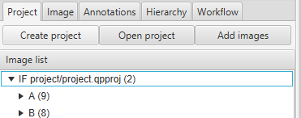Image tab: This tab is probably the most important to share when asking for help on the forum, as much of what goes wrong with images and image analysis stems from settings found here. Missing Pixel width and Pixel height metadata is one of the more common problems.
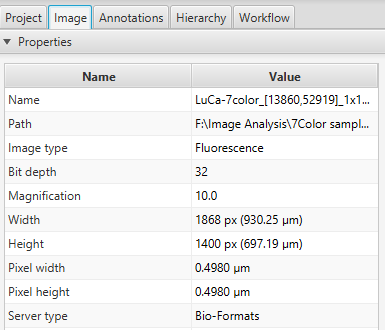Annotations and Hierarchy tabs: Similar in many ways, as they both show a list of objects, and have a data table for the bottom half of their viewing area that shows the measurement list of a selected object. Annotations shows only annotations, and no order indicating whether any annotation is contained within another. It also has an editable list of available classes. You can create new ones by right clicking, or edit the color of a class by double clicking on it. Right clicking on existing classes also gives a variety of options including the ability to toggle a class’s visibility on/off. The Hierarchy tab lacks the class options, but uses the extra space to show what objects are contained within other objects. This list can become quite cumbersome to navigate with hundreds of thousands of detections (and slow down performance), so 0.1.3+ has options within Preferences to toggle off detections within the list.
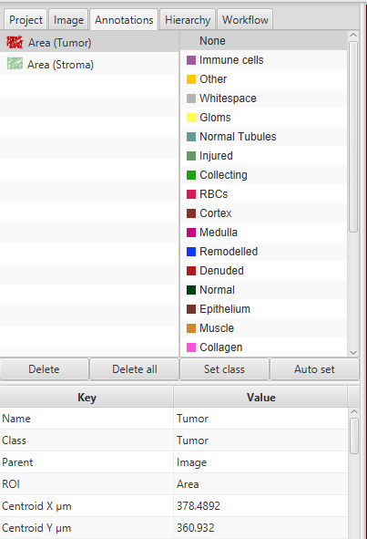The four buttons in the middle of the Annotation pane mostly control annotations. Delete and Delete all do exactly what they say, to either the selected annotation or all annotations. Set class takes both the currently selected annotations and the currently selected class (single left click), and assigns that class to the annotation. Auto set saves a couple of clicks by assigning newly created annotations to the selected class.
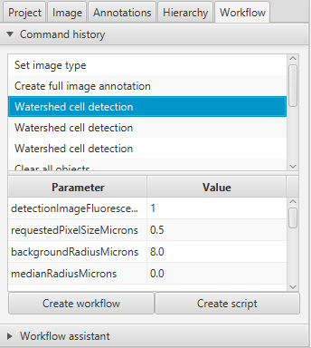Workflow tab: Mostly used at the end of an analysis project, this tracks most of what you have done (not all functions are included), and can be used to generate a quick script including most steps. Generally you will want to take the total script and delete out all of the lines of duplicate attempts, then tidy up what remains of the actual analysis. I prefer to do this within the script, but you can start with Create workflow and edit the script through a graphical interface as well. Any individual function that will show up in the script can also be selected in the Command history in order to view what parameter values were used.
Viewer:¶
The main viewing area. Once you have “clicked into” this, you can use the drawing tools, the 1-0 keys to control what is visible, among other things. Some functions will not work unless the Viewer is the “active window.”
In the upper right you will see your slide overview thumbnail, and, usually, a red rectangle indicating where the viewing area currently is. You can click within this “map” to move the Viewer to a different location. In the lower left and lower right the scale bar and location plus pixel values can be found (unless turned off in the View menu).
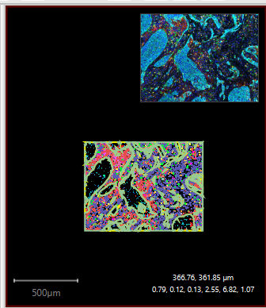Right clicking on a selected annotation within the viewing area brings up a context menu that includes a few important options, including the ability to lock or unlock the current annotation.
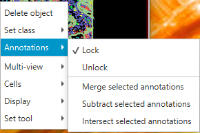Multi-view: Regardless of whether you have an object selected, the context menu for the Viewer should always include the Multi-view option, which allows you to add rows and columns in order to view additional images at the same time. This can be very useful for sequential slice studies.
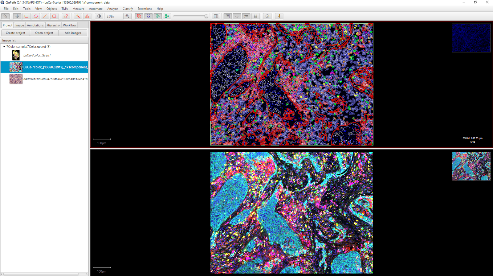Off-topic but related, 0.2.0m# introduces the View->Mini viewers->Show channel viewer, which can allow simultaneous, but separate, visualization of all channels in an image at once.
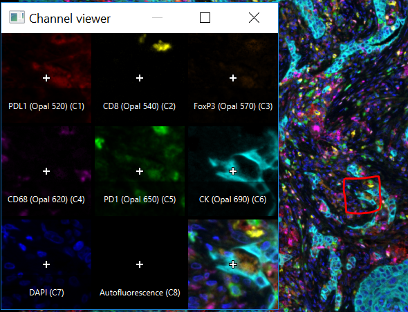This concludes your basic tour of the interface, and should give you enough information to get started! If you are familiar with creating projects, jump straight to the first steps in analysis, or learn more about starting a project and why it is important.